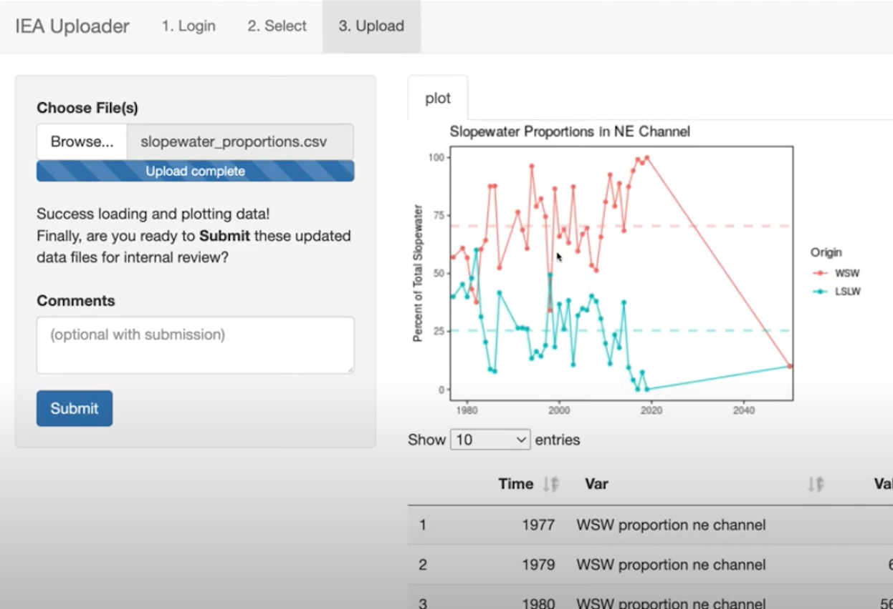

Uploader

Details
The Uploader app updates datasets in the ecodata R package.

Figure 3 (Bastille et al. 2021) with extra highlighting in yellow: “Data Uploader”, “Shiny application”. Northeast IEA indicator workflow from ingesting raw data to generating final reports. This workflow outlines the stream of indicator data starting with raw uploadable formats (tables in Excel or text format) or existing on-line datasets in ERDDAP. A Google Form is used to collect information on new indicators, including metadata and file uploads. Existing indicators that need to be updated with newer data can use the Data Uploader application to update and visualize the dataset with the new data. All indicator data are managed within the ecodata R package. R scripts ingest the data (get_{indicator}.R) into a documentable and reusable R dataset format (*.rda). Rmarkdown reports organized by theme alternate text with plots of the indicators. The R chunks in these Rmarkdown reports are individually output for plotting reuse by the Data Uploader application and the many IEA reports.
using the following dataset attributes:
data_steward: name and email of all data stewardstech-doc_url: link to documentation of the datasetdata_files: file names of input data
For instance here’s how the aquaculture dataset gets attributed in data-raw/get_aquaculture.R:
attr(aquaculture, "tech-doc_url") <- "https://noaa-edab.github.io/tech-doc/aquaculture.html"
attr(aquaculture, "data_files") <- list(
aquaculture_xlsx = aquaculture_xlsx)
attr(aquaculture, "data_steward") <- c(
"Chris Schillaci <christopher.shillaci@noaa.gov>")References
Bastille, Kimberly, Sean Hardison, Lynn deWitt, Jennifer Brown, Jameal Samhouri, Sarah Gaichas, Sean Lucey, et al. 2021. “Improving the IEA Approach Using Principles of Open Data Science.” Coastal Management 49 (1): 72–89. https://doi.org/10.1080/08920753.2021.1846155.